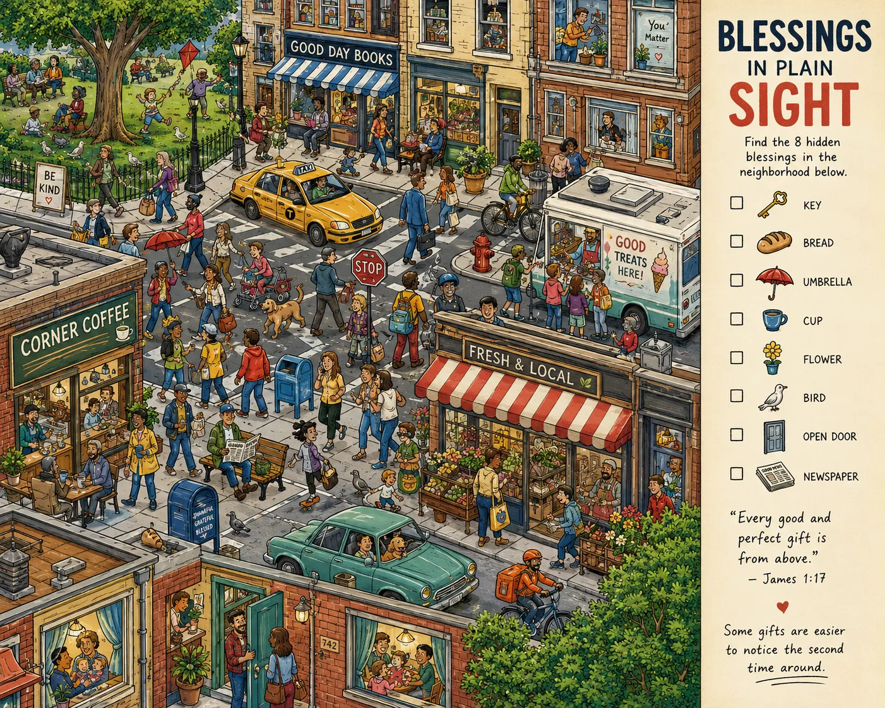

Blessings in Plain Sight. Eight of them are in this street. Nobody in the picture is looking for any of them, which is roughly the point. Answers are not printed — you either find them or you walk past them, same as the rest of the week.
Issue 001 / Page 31